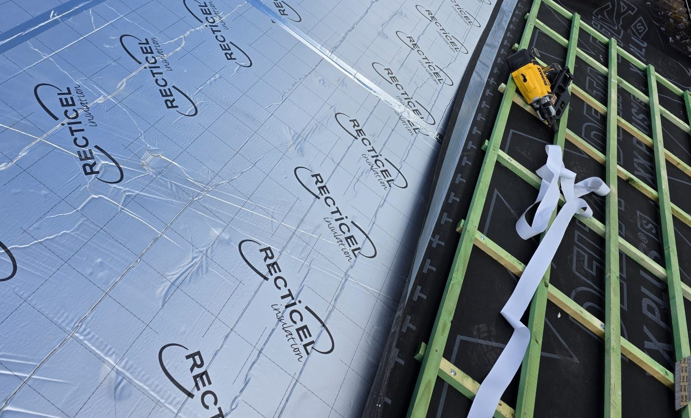
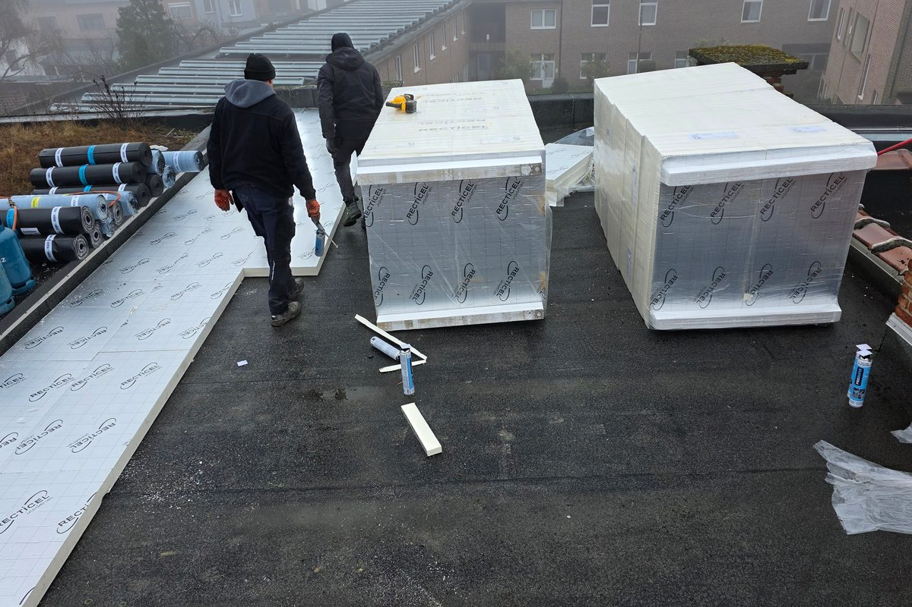

Lokale dakwerker
Rechtstreeks contact met Werner zelf.

Dakisolatie kan helpen om warmteverlies te beperken en het comfort in de woning te verbeteren. Vandormael Werner bekijkt wat mogelijk is binnen de bestaande dakopbouw en bespreekt een praktische aanpak.
Rechtstreeks contact met Werner zelf.
Voor kleinere werken én grotere dakprojecten.
Heldere afspraken voor dakwerken, isolatie en herstellingen.
Dakisolatie wordt vaak bekeken bij renovatie van een hellend of plat dak. De juiste aanpak hangt af van de bestaande dakopbouw, de staat van het dak en de werken die eventueel tegelijk uitgevoerd worden.

De bestaande dakopbouw, mogelijke vochtproblemen en de aansluitingen rond de isolatie zijn belangrijke aandachtspunten. Ook ventilatie wordt, waar relevant, in de volledige dakopbouw bekeken. Een correcte uitvoering is vooral belangrijk wanneer isolatie samen met een dakrenovatie geplaatst wordt.
Eerst wordt bekeken hoe het dak vandaag is opgebouwd.
Isolatie wordt vaak logisch gecombineerd met herstelling of renovatie.
Een correcte opbouw is belangrijk om vochtproblemen te vermijden.
Ja, dakisolatie kan deel uitmaken van de renovatie van een hellend dak. De aanpak hangt af van de bestaande dakopbouw en de geplande werken.
Ja, ook bij werken aan een plat dak kan isolatie mee bekeken worden. Eerst wordt nagegaan welke opbouw technisch past bij de bestaande situatie.
Ja, dat is vaak een logisch moment om de isolatie mee aan te pakken. Zo kunnen dakbedekking, isolatie en aansluitingen samen bekeken worden.
Bij dakisolatiewerken kan Vandormael Werner de nodige factuurinformatie of uitvoeringsdocumenten bezorgen voor een mogelijke premieaanvraag. Dit is geen garantie op goedkeuring.
De voorwaarden kunnen wijzigen. Controleer daarom altijd de actuele informatie bij de bevoegde overheid of Mijn VerbouwPremie.
Werner werkt vanuit Wellen en voert dakisolatiewerken uit in de ruime regio Limburg.
Heeft u een vraag over deze werken? Bel Werner, stuur een WhatsApp-bericht of stuur eventueel enkele foto's via WhatsApp of e-mail.